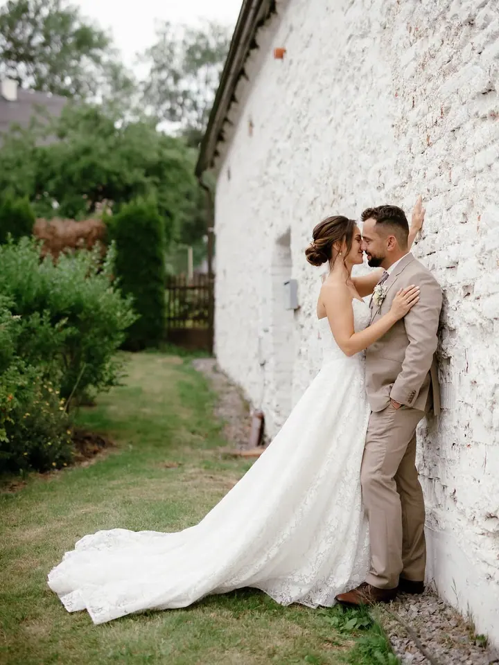
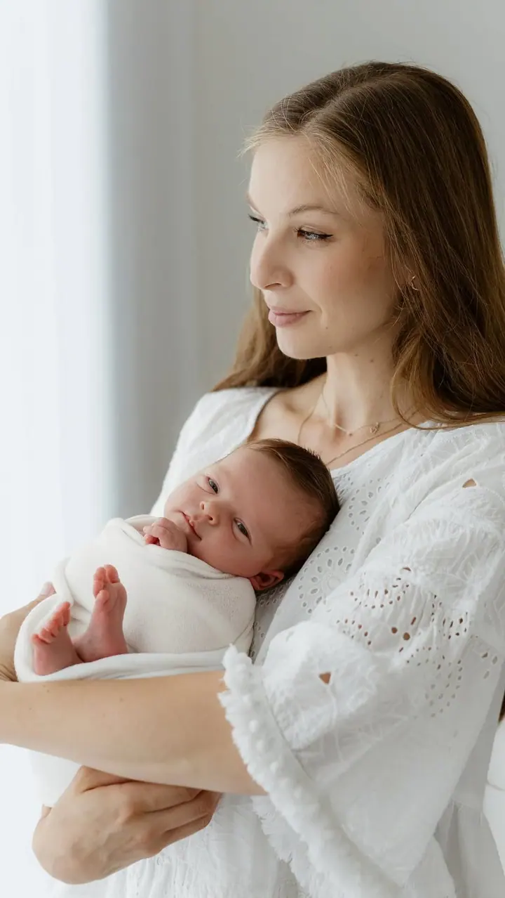
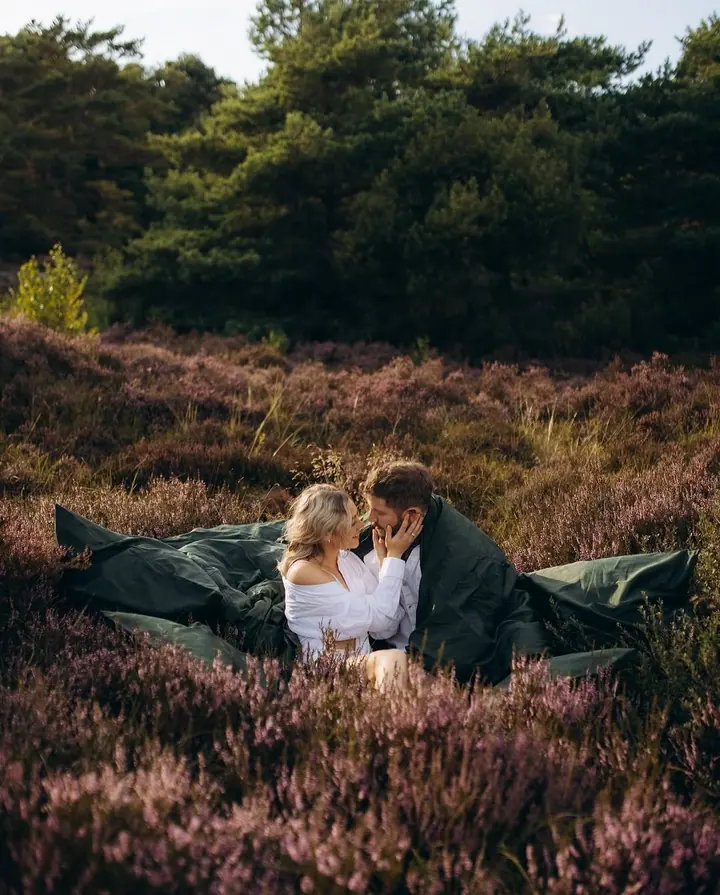

Svatební focení
Svatbu vám pomůžu vyprávět jako příběh vaší lásky, od přípravy až po večerní chvíle s přáteli. Cena se pohybuje od 14 000 do 25 000 Kč podle rozsahu dne.

Jmenuji se Lucie Cardová a jsem rodinná a svatební fotografka z Brna. Fotím svatby, miminka v klidu svého ateliéru i rodiny a páry venku nebo u vás doma. Pojďme spolu vy…
Rezervovat termínJsem rodinná a svatební fotografka a fotím s láskou a pokorou. Doma jsem v Brně, ale za focením ráda vyrazím kamkoliv, klidně i za oceán. Letos jsem fotila v New Yorku.


Na fotkách chci zachovat realitu a to, co se během focení opravdu děje. Nežehlím oblečení, neupravuji proporce ani vrásky a nevyměňuji obličeje z jiných snímků. Ráda povzbudím dospělé i děti, takže se nakonec usmějí i ti, kterým se do focení zprvu nechtělo.
V Brně mám ateliér Lucent Studio, kde fotím hlavně miminka, ale můžeme v něm bez příplatku fotit i rodinné, párové nebo těhotenské focení. Komerční a firemní zakázky fotím pod značkou Brand Studio.
Co fotím
Svatbu vám pomůžu vyprávět jako příběh vaší lásky, od přípravy až po večerní chvíle s přáteli. Cena se pohybuje od 14 000 do 25 000 Kč podle rozsahu dne.
Na miminka si vyhrazuji víc času, aby se celá rodina cítila v pohodě a ne pod tlakem. Máme čas na kojení, uspávání, chování i na kafe v klidu ateliéru.
Fotím venku, u vás doma nebo v ateliéru bez příplatku. Vyberete si balíček Mini, Standart nebo Maxi podle toho, kolik času a fotek chcete.
Čekání na miminko zachycené v klidu, venku nebo v ateliéru. Platí pro něj stejné balíčky jako pro rodinné a párové focení.
Postup
Napište mi přes formulář, e-mail, telefon nebo sociální sítě. Společně vybereme balíček, místo a termín focení.
Fotíme venku, u vás doma nebo v mém ateliéru v Brně. Když bude špatné počasí nebo nemoc, přesuneme focení na nejbližší možný termín.
Do 2 týdnů od focení vám pošlu náhledy a vy si sami vyberete fotky do svého balíčku.
Vybrané fotky upravím a do 3 týdnů od výběru vám je pošlu v online galerii, kde je uchovávám nejdéle rok.
Otázky
Balíček Mini (45 minut, 10 fotek) stojí 3 300 Kč, Standart (1 hodina, 25 fotek) 4 000 Kč a Maxi (1 až 1,5 hodiny, 45 fotek) 5 000 Kč. Platí se hned po focení.
Newborn focení u mě v ateliéru trvá 1,5 až 2,5 hodiny, obsahuje 20 upravených fotek a stojí 4 600 Kč. Pro miminka i rodiče mám v ateliéru na půjčení i pár kousků oblečení.
Ceny svateb se u mě pohybují od 14 000 do 25 000 Kč. Napište mi, co plánujete, a pošlu vám podrobnější informace.
Fotky nad rámec balíčku si můžete dokoupit za 150 Kč za kus. Originály neposkytuji a RAW soubory mažu týden po odevzdání.
V ceně je základní retuš, třeba pupínek nebo škrábanec. Větší úpravy dělám jen po domluvě za příplatek, protože chci, aby fotky zůstaly opravdové.